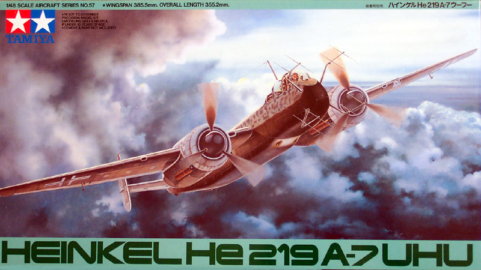
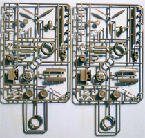
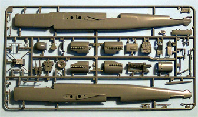
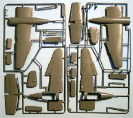
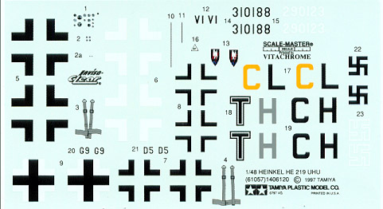

{kind=link}
{kind=link}
{kind=link}
{kind=link}
{kind=link}


1/48 scale Tamiya Heinkel He-219 �Uhu�

Kit # 61057 MSRP $46.00
Text and images Copyright � 2004 by Matt Swan
Developmental History
Potentially one of the most effective night-fighters for the Luftwaffe, the Heinkel He-219 "Uhu' (eagle owl) was doomed by political misjudgments and maltreatment. Powered by two Daimler-Benz DB603 engines, this aircraft with a long and slender fuselage displayed its combat-worthiness against allied bombers in nocturnal operations during the final days of World War Two. The He-219 incorporated a number of advanced features such as pressurized crew compartment; cockpit positioned at the extreme nose for excellent visibility and was also the world's first operational aircraft to be equipped with ejector seats.
The history of the He-219 is filled with political intrigue and engineering excellence. The Reichsluftfahrtministerium had been lukewarm about the project from the beginning, Heinkel's private venture P.1060 fighter-bomber proposal receiving little encouragement until 1941 when it was seen to have potential as a night-fighter. The first prototype was flown on 15 November 1942, powered by two 1,750 hp Daimler-Benz DB 603A engines, and in December armament trials were undertaken at Peenemunde. By late 1942 prototypes featuring various trial packages such as four MG 151s in the ventral tray and the FuG 212 C-1 and 220 SN-2 Lichtenstein radar arrays were being produced at Rostock, Vienna-Schwechat and the Polish factories at Mielec and Buczin.
Ernst Heinkel did not curry as much favor with the Luftwaffe high command as did many of his contemporaries such as Willie Messerschmitt, Hugo Junkers and Kurt Tank. Field Marshall Erhard Milch is widely held to be responsible for the fact that the He-219 never made it into full scale production. In a huge political battle between Josef Kammhuber, General of the Night Fighters, and Erhard Milch, Inspector General of the Luftwaffe, Milch repeatedly tried to have the program killed, and in the process Kammhuber was shoved from his office. And suddenly the 219 looked like the ultimate night fighter. On its very first use in combat Werner Streib flew the V9 and shot down five bombers in a single mission. In the next ten days, three prototype planes would shoot down a total of twenty RAF planes, including six of the previously untouchable de Havilland Mosquito fighters.
Production finally got underway with the He-219A-2 model but production problems due to continued bombing meant the A-2/R1 did not reach Luftwaffe units until October 1943. Production actually ended for a time, but then restarted because the new Junkers Ju 388's were taking too long to get into service. These political games ended when Milch was dismissed and replaced by Albert Speer. He immediately ordered a slightly upgraded He 219A-5 model (some with 603E engines) and finally the He 219A-7 with the original 603G engines which were finally available. The plane was a capable fighter, allowing the pilots a large degree of autonomy. Ground control simply got them into the right area and then the pilot took over and hunted down the bombers on their own.
Although the total number of production was only 268 units by the end of the war, the aircraft had gained an almost mythical reputation. It was reported to be the superior platform among the Luftwaffe's reciprocating engined night-fighters, better than any of the German aircraft adapted to the role such as the Me-110 and Ju-88, and gained noteworthy results against allied air forces. In the end very few actually saw service.
The Kit
Oh boy! This is another one of those boxes full of modeling goodness. Not only is this a fairly large box but it is packed full of goodies. I don�t know about you but the kits that come with a bazillion parts really get me excited and this kit is doing just that. Upon opening the box the first thing to catch my attention was a cardboard insert with a large hard plastic bubble card attached containing a white metal core piece for the front office. There is not much fine detail to this piece as it is intended to be mostly covered with injection molded pieces but it does carry a goodly mass to it and it seems likely that it will hold the front end down quite well. Once this insert has been removed and set aside the next items of interest are the many plastic bags protecting the parts sprues from shipping damage.
The first bag contains two identical sprues covering the landing gear assemblies, engine detail pieces and crew. Next is the main fuselage sprue with the cockpit details, radar pieces and engine nacelles. Finally there are two more nearly identical sprues covering the wings, tail controls and a few other small detail pieces. All of these parts display beautifully engraved panel lines and more deeply engraved control separation lines as well as a multitude of recessed rivets. I see no flash anywhere on these parts and the mold separation lines are very minimal. While the rudders, ailerons and elevator are cast in place the flaps are provided as separate pieces. Interior pieces for the cockpit show very nice levels of detail and will most certainly do a good job of creating a solid impression of a busy front office. The 220 SN-2 Lichtenstein radar array is well represented on both the nose and within the fuselage for the dorsal assembly.
One unusual set of items to catch my attention were the wing spars. Tamiya has included two very sturdy rounded plastic channel pieces that slide through the fuselage and into the wings to support the structure. On this same sprue that contains these solid spars are some very delicate antenna arrays. This is something that I would have expected to be done with photo-etched material but Tamiya has done an adequate job of rendering them in polystyrene. Care will most definitely be required when removing these from the tree and installing them.



You may click on the above images to view larger pictures
Included amongst the large bags of sprues are two more smaller bags, one containing just two poly caps for the propellers. Usually in these Tamiya kits you get plenty of extra caps, which is nice in the event that the carpet monster should consume one but that benefit does not exist here. Pay close attention to where you store these caps while building the rest of the model. The second bag contains the clear parts sprue that breaks down the canopy into three main pieces so you can build this open or closed. Also covered here is the Peil suppressed aerial cover, pilot�s armor plate glass, gun sight, tail cone and landing light lens. Parts count wise we have 8 clear pieces, one metal nose weight, two poly caps and 125 light gray pieces for a total of 136 pieces in the box � not quite a bazillion but enough to keep me busy for a while.
Decals and Instructions

Tamiya provides us with Scale-Master printed markings for three different aircraft, two from NJG1 (one mottled blue on black and one mottled blue on blue) and one aircraft from NJG3 that is also a mottled blue on blue pattern. Instrument decals are provided for the dash and some of the radar panels and the seat belts for this kit are provided as decals. Most of the decals are black and white but the color density does appear to be good and as always with Tamiya, the print registry is on the mark. Something that I am seeing in the newer releases from Tamiya is a sheet of rice paper stapled directly to the decal sheet now protects the decals and this is exactly how these are delivered � low chance of shipping damage here. The instruction package is very complete with this kit. The main instruction sheet is a twelve-panel foldout that contains (in four languages) a nice little technical history of the aircraft but totally ignores the political intrigues that surrounded its development. A color chart is provided but it covers Tamiya paint codes only. There are six and one-half panels broken down into sixteen exploded view construction steps that are clearly illustrated, arraigned in a logical manner and feature multiple paint code call-outs. Finally on this set of instructions are one and one-half panels of decal placement instructions and camouflage patterns for NJG1 aircraft TH.
Also included in the instruction package is a separate set of decal and camouflage instruction for the other two aircraft markings. This is not all, the remaining item is a full sized, to scale sheet containing the camouflage pattern for the mottled blue on black pattern from NJG1.
Conclusions
This kit is really nice, let there be no question of that. Tamiya did a really nice job in their research, design and engineering of parts and development of building and painting instructions. The pieces are packaged very well and have little chance of recieving damage in shipping. The individual pieces display crisp panel lines and rivet markings, no flash and minimal mold separation lines. The only thing I could possibly see as a shortfall in this package is the lack of any photo etched materials. I saw several areas where PE would improve this kit such as underneath the suppressed aerial cover that the modeler will have to paint an intricate pattern on. A PE piece would have been perfect here. The rudder pedals could use to be replaced with PE and I�m sure that there are many levers and panels in the cockpit that would be well represented by some more PE parts.
This kit was originally released in 1997 and the aftermarket people have lost no time in jumping on the band wagon and taking care of these short comings I just mentioned. Aires offers three different detail packages for the Uhu; Cutting Edge offers a mask set and five different radar upgrade packages. Czech Master has produced three separate detail packages. Eduard, EZ Mask and True Details all offer mask sets and Squadron has a replacement canopy set on the market. About the only thing missing now are aftermarket decal packages for this.
This model kit will build directly out of the box and make a very nice item for your display shelves or you can go really nuts and add lots of aftermarket resin and PE goodies to it. Either way, I give this kit my highest recommendation and suggest that you do not pass on an opportunity to acquire one for your collection.